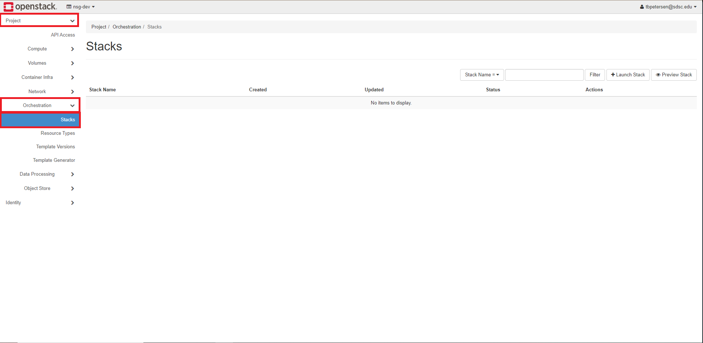
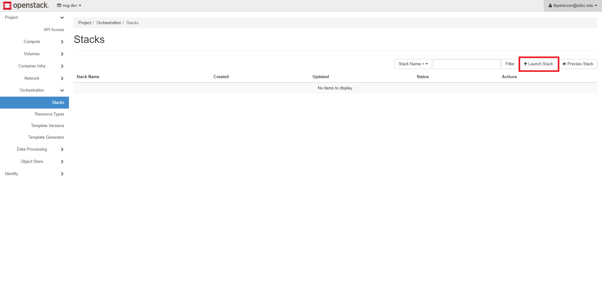
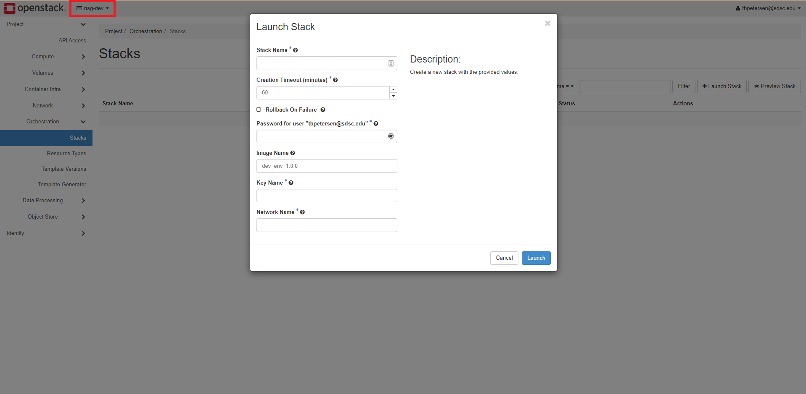

This guide will show you how to set up a two node cluster that is configured to run OpenMPI. Before following this guide, make sure that you have set up an SSH key.
Navigate to Project -> Orchestration -> Stacks using the menu on the left. 
Click Launch Stack on the upper right of the screen. 
Change Template Source to URL and paste the following URL into Template URL:
https://raw.githubusercontent.com/sdsc/nsg-developer-env/master/guides/public/mpi_cluster/res/cluster-template.yaml
Click Next.
Fill out the form that shows up:
Network Name - should be "[project name]s_network" where your replace [project name] with the name of your project. This value should be in the upper left corner.  For example, the project name here is "nsg-dev"
Click Launch. The stack will create two compute instances called "nsg-node-1" and "nsg-node-2". You can connect to these nodes via ssh using the ssh key specified earlier. The IPs for these instances can be found on the Instances page. Use whatever username is default for the image that you specified earlier. If you specified an nsg-dev image, then the user should be "ubuntu".
Note: Clusters should only stay up for as long as they are needed. When they are not needed, be sure to destroy them or shelve the nodes.
Navigate to Project -> Orchestration -> Stacks using the menu on the left.
Select the check mark for the stack that you would like to destroy. Then click Delete Stacks in the upper right.